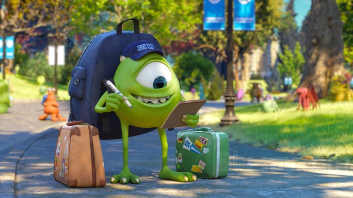
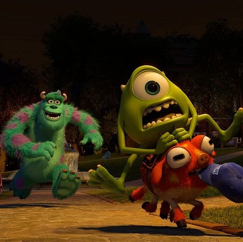
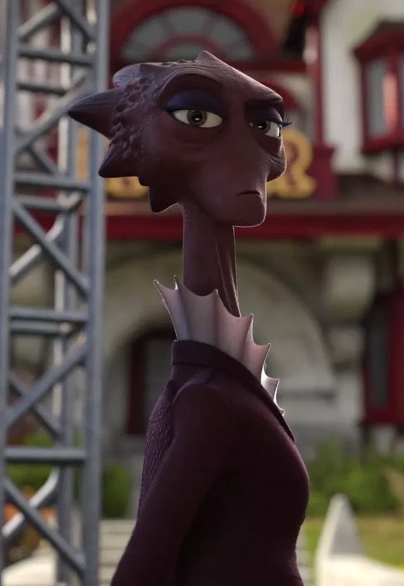

1.) Monsters University (2013)
Het verhaal
Mike Wazowski
- Volledige naam: Michael Wazowski
- Roepnaam: Mike
- Over: Mike is een bolvormige monster met een groene huid en een smaragdgroen oog. Hij heeft slanke armen en benen, beiden met klauwen, maar hij heeft vier vingers aan elk hand en drie tenen aan elk voet. Qua persoonlijkheid is Mike grappig, slim en moedig, maar soms ziet hij niet wat voor de hand liggend is in een situatie. Hij is ook een zeer zorgzame en toegewijde vriend.


Het verhaal begint met de 17-jarige Mike Wazowski die
uit een bus stapt recht voor MU (Monsters University). Het is namelijk zijn eerste schooldag
op de MU en hij is extreem opgewonden hiervoor. Wanneer Mike zijn studentenkamer binnenkomt,
ontmoet hij zijn kamergenoot; de nerderige en verlegen
Randall.
Op de eerste lesdag, heeft Mike het vak Scaring 101. Wanneer de professor van Scaring 101 zijn verhaal doet,
komt onverwachts de decaan van de school binnen, Abigail Hardscrabble. Abigail laat de
klas weten hoe hoge verwachtingen ze heeft van de bangmakings-vermogen van de monsters in
opleiding. Ze vertelt ook dat er een belangrijk examen zou plaatsvinden aan het einde van de semester
en dat als je deze examen niet haalt, je uit het "Scare Program" wordt gegooid. Nadat Abigail de klas verlaat,
komt opeens de 18-jarige te late leerling James P. Sullivan
binnen, een natuurlijke "scarer". James heeft veel potentie, maar studeert nooit en vergeet
altijd zijn pennen en boeken naar de les.
James Sullivan
- Volledige naam: James P. Sullivan
- Roepnaam: Sulley
- Over: Sulley is een groot harig cyaan monster met magenta vlekken en maagdenpalmogen. Hij heeft gebogen hoorns, witte klauwen, vlijmscherpe hoektanden, witte stekels die langs zijn achterkant naar het einde van zijn lange dinosaurusachrige staart lopen en een grote harige buik. Sulley heeft een goedmoedige, hardwerkende en zelfverzekerde persoonlijkheid.

Mike en James beginnen niet op de goede voet met elkaar, wanneer James met de eer strijkt
voor iets wat Mike heeft gedaan. James krijgt voor die daad aandacht van de studentenclub
ROR (Roar Omega Roar).

Terwijl de president van de club met Sulley (James) praat,
probeert Mike hun aandacht te trekken en hen te volgen naar een feestje, maar dan wordt
Mike tegengehouden door een monster die zegt dat het feest alleen is bedoeld voor
"studenten die een kans hebben". Met name door deze gebeurtenis ontstaat er intense rivaliteit
tussen de twee. Mike probeert indruk te maken op professor Knight van Scaring 101, terwijl
Sulley door niets te doen al erg wordt gewaardeerd door de Professor en door de ROR's.
De dag van het eindexamen komt eraan, waar elke student de juiste schriktaktiek moet uitvoeren
die aan elk nepkind is toegewezen met behulp van een schriksimulator die is ingesteld op de
gemiddelde instelling. Mike en Sulley zijn nog steeds elkaars ergste aartsrivalen en ze dagen
elkaar regelmatig uit.
Als Mike en Sulley elkaar uitdagen gaat het zo heftig mis dat ze decaan Hardscrabble
per ongeluk ermee lastigvallen. Beiden worden uit het "Scare Program" gegooid en ze eindigen
op de extreem saaie Scream Can Design-school. Sulley beschuldigt Mike dat het zijn schuld
is dat hij uit het "Scare Program" is gegooid en Mike beschuldigt Sulley juist.
Dan bedenkt Mike een plan om weer deel te kunnen nemen aan het "Scare-Program",
Hij besluit mee te doen aan de "Scare Games", waar hij met de eerste plek weer
wordt toegelaten tot het "Scare-Program" van de MU, maar dit gaat nog niet zo
gemakkelijk.
Abigail Hardscrabble
- Over:

Professor Hardscrabble is een donkerrood monster met duizendpootpoten en rode vleermuisvleugels.
Ze is de decaan van de School of Scaring aan Monsters University.
Hardscrabble is een strikte en een no-nonsense schooldirecteur, die niet zo snel tevreden is. Ze is niet bang om op iemands tekortkomingen te wijzen en beledigt zelfs lichtjes studenten die geen indruk op haar maken.
Mike moet een team vormen, maar wanneer hij mede-studenten bericht
hierover, is niemand bepaald enthousiast, ze zien niet echt een kans om te winnen.
Uiteindelijk lukt het Mike om een team te vormen, maar echt veel vertrouwen heeft
hij niet echt in zijn teamgenoten. Het team bestaat uit allerlei niet enge
monsters en Sulley, die op het allerlaatste moment voor de inschrijving
besluit om zich aan te sluiten aan het team van Mike.
Het team genaamd "Oozma Kappa!"gaat samen in 1 huisje wonen, waar ze zich voorbereiden op de Scare Games.
Ze krijgen een brief van de Scare Games binnen, waarin de eerste uitdaging
van de game wordt aangekondigd: The Toxicity Challenge.
Mike probeert het team zo goed mogelijk voor te bereiden op de Scare Games,
alleen wilt het nog niet perse goed lukken. Mike en Sulley zijn het telkens oneens
met elkaar en de rest van het team is ook niet bepaald gemaakt voor de Scare Games.
De kans is ontzettend klein dat ze winnen, maar daar komt verandering in..........
Oozma Kappa! komt door verschillende omstandigheden steeds een ronde verder. Er is telkens sprake van "geluk", elke keer gebeurt er iets waardoor ze toch doorgaan naar de volgende ronde. Bijvoorbeeld: Ronde 1, "The Toxicity Challenge" een andere team werd gediskwalificeerd, omdat er acheraf bleek dat ze vals speelden. Nadat het team op basis van geluk de eerste paar rondes hebben gewonnen, groeit het team steeds meer naar elkaar toe en gaan ze steeds beter samenwerken. Mike en Sulley worden zelfs beste vrienden en gaan altijd voor elkaar klaar staan.
Oozma Kappa! Neemt het in de finale het tegen de ROR's op, een gevaarlijke tegenstander. Even denkt het team dat ze gaan verliezen, maar inmiddels is het team zo goed geworden dat ze de Scare Games winnen!